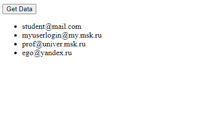
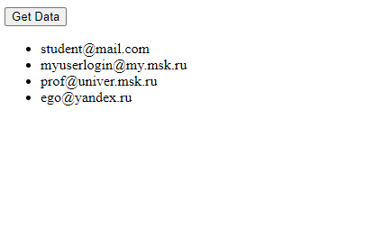

ИСР Тема 3. Разработка приложения для асинхронного считывания данных из JSON и вывода в веб-документ путём нативной модификации дерева DOM
Данные JSON получены по адресу https://kodaktor.ru/j/users
Данные считываются с помощью fetch. Модификация дерева DOM происходит путём вызова функции appendChild
Код приложения (фрагмент

Данные считываются с помощью fetch. Модификация дерева DOM происходит путём вызова функции appendChild
Код приложения (фрагмент script):
document.querySelector('#btn').onclick = async () => {
let response = await fetch('https://kodaktor.ru/j/users');
data = await response.json();
data.users.forEach(user => {
let ul = document.querySelector('#users');
let li = document.createElement('li');
li.appendChild(document.createTextNode(user.login));
ul.appendChild(li);
});
}
